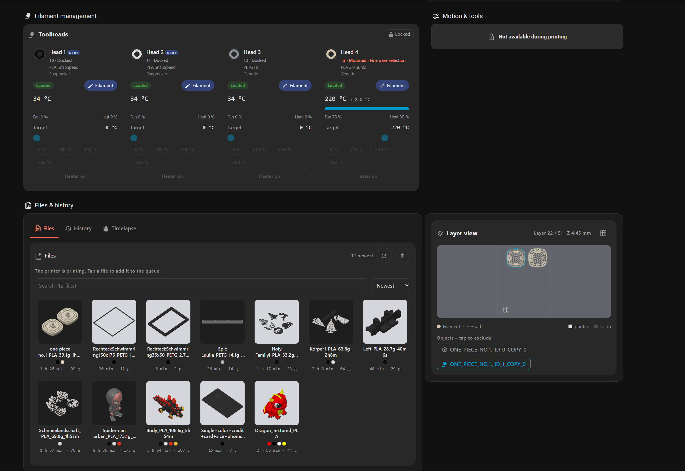
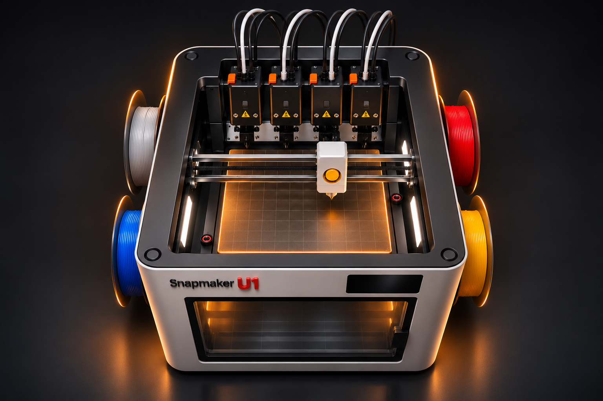
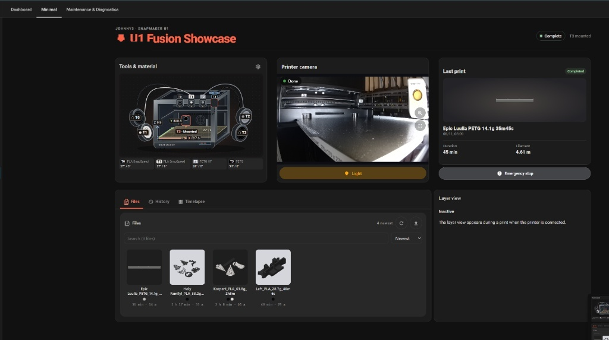

Tools & Material
Tap the printer graphic to open the controls for the current print state. The card also shows live spool colors, temperatures and tool positions.

Browser simulation · sample values only. No printer or Home Assistant connection.
In Home Assistant, open the gear on the card. Choose Studio or Cutaway under Image. With Live spool colors on, the graphic reflects the loaded filament colors reported for each slot.
Tap the printer to open controls
The printer graphic opens the controls. Use Filament & heat to select a tool, preheat and start loading or unloading when supported. Fit a new spool and feed it to the inlet at the printer.
Loaded filament colors at T0–T3
The live graphic shows each reported spool color at its actual T0–T3 position. Manage filament assignments and switch between loaded tools when the printer state allows it. Spoolman inventory is optional.
Real-Time 3D Axes Tracking (X, Y, Z)
Live scaled coordinates for print bed and carriage (e.g. X 227.6, Y 300.5, Z 9.9). See at a millimeter glance where head and bed currently reside.
Live Temperatures on Nozzles & Bed
See the current and target temperatures for all four nozzles and the bed. Open Filament & heat to adjust supported targets for the selected tool.
Toolhead Mounting & Docking Feedback
Shows the reported toolhead positions. Missing telemetry is shown as unknown.
Dashboard Gallery & Screenshots
Screenshots of the dashboard in Home Assistant. Open an image to see it at its original size.

More of the dashboard: tools, files and layer view





See the maintenance and diagnostics details


See the phone layout

Install the dashboard
The installation page lists the required HACS cards and the exact files to download.
Optional: print completion chime and light
The chamber light reverses state for 1.2 seconds on entry into the last valid layer. Confirmed completion is the fallback. The Alexa bell_02 chime attempts to play near 99.9% or at completion, depending on telemetry.
Setup and entity mapping · Open YAML
Show YAML
alias: "Snapmaker U1 – Fertigdruck-Fanfare & Licht (Letzter Layer & Ende)"
description: >-
Spielt den Alexa-Sound 'bell_02' bei 99,9% bzw. Druckende ab und lässt das
Bauraumlicht beim Eintritt in die letzte Schicht (Last Layer) 1,2 Sekunden sichtbar
blinken (Gegenphase), damit man das Signal auch bei aktiver nativer Lichtabschaltung sieht.
triggers:
- trigger: numeric_state
entity_id: sensor.snapmaker_u1_card_fortschritt
above: 99.89
id: early_chime
- trigger: state
entity_id: sensor.snapmaker_u1_card_schicht
to: null
id: last_layer
- trigger: state
entity_id: sensor.snapmaker_u1_card_druckstatus
from: printing
to: complete
id: complete
conditions:
- condition: or
conditions:
- condition: trigger
id: complete
- condition: and
conditions:
- condition: trigger
id: early_chime
- condition: state
entity_id: sensor.snapmaker_u1_card_druckstatus
state: printing
- condition: template
value_template: "{{ trigger.from_state is not none and is_number(trigger.from_state.state) }}"
- condition: and
conditions:
- condition: trigger
id: last_layer
- condition: state
entity_id: sensor.snapmaker_u1_card_druckstatus
state: printing
- condition: state
entity_id: binary_sensor.snapmaker_u1_card_live_verbindung
state: "on"
- condition: template
value_template: >-
{% set before = trigger.from_state %}
{% set after = trigger.to_state %}
{% if before is none or after is none %}
{{ false }}
{% else %}
{% set total = after.attributes.get('total_layers') | int(0) %}
{{ total > 0
and before.attributes.get('total_layers') | int(0) == total
and is_number(before.state) and before.state | int(-1) < total
and is_number(after.state) and after.state | int(-1) == total }}
{% endif %}
actions:
- parallel:
- alias: "Glocke zum Druckende"
sequence:
- if:
- condition: trigger
id: last_layer
then:
- wait_template: >-
{{ states('sensor.snapmaker_u1_card_druckstatus') not in ['printing', 'paused']
or (is_state('sensor.snapmaker_u1_card_druckstatus', 'printing')
and states('sensor.snapmaker_u1_card_fortschritt') | float(-1) > 99.89) }}
timeout: "02:00:00"
continue_on_timeout: false
- condition: or
conditions:
- condition: state
entity_id: sensor.snapmaker_u1_card_druckstatus
state: complete
- condition: and
conditions:
- condition: state
entity_id: sensor.snapmaker_u1_card_druckstatus
state: printing
- condition: numeric_state
entity_id: sensor.snapmaker_u1_card_fortschritt
above: 99.89
- action: media_player.play_media
target:
entity_id: media_player.your_alexa_echo_device # <-- Hier dein Echo-Gerät eintragen
data:
media_content_type: sound
media_content_id: bell_02
continue_on_error: true
- wait_template: "{{ states('sensor.snapmaker_u1_card_druckstatus') not in ['printing', 'paused'] }}"
timeout: "00:15:00"
continue_on_timeout: false
- alias: "Innenraumlicht einmal sichtbar blinken lassen"
sequence:
- if:
- condition: trigger
id: early_chime
then:
- wait_template: "{{ states('sensor.snapmaker_u1_card_druckstatus') not in ['printing', 'paused'] }}"
timeout: "00:15:00"
continue_on_timeout: false
- condition: or
conditions:
- condition: and
conditions:
- condition: trigger
id: last_layer
- condition: state
entity_id: sensor.snapmaker_u1_card_druckstatus
state: printing
- condition: state
entity_id: sensor.snapmaker_u1_card_druckstatus
state: complete
- condition: state
entity_id: binary_sensor.snapmaker_u1_card_live_verbindung
state: "on"
- condition: state
entity_id: light.snapmaker_u1_card_innenraumlicht
state:
- "on"
- "off"
- variables:
light_before: "{{ states('light.snapmaker_u1_card_innenraumlicht') }}"
- if:
- condition: template
value_template: "{{ light_before == 'on' }}"
then:
- action: light.turn_off
target:
entity_id: light.snapmaker_u1_card_innenraumlicht
continue_on_error: true
else:
- action: light.turn_on
target:
entity_id: light.snapmaker_u1_card_innenraumlicht
continue_on_error: true
- wait_template: "{{ is_state('light.snapmaker_u1_card_innenraumlicht', 'off' if light_before == 'on' else 'on') }}"
timeout: "00:00:04"
continue_on_timeout: true
- delay:
milliseconds: 1200
- if:
- condition: template
value_template: "{{ light_before == 'on' }}"
- condition: not
conditions:
- condition: and
conditions:
- condition: trigger
id: last_layer
- condition: state
entity_id: sensor.snapmaker_u1_card_druckstatus
state: complete
- condition: state
entity_id: switch.snapmaker_u1_card_licht_aus_nach_dem_druck
state: "on"
then:
- action: light.turn_on
target:
entity_id: light.snapmaker_u1_card_innenraumlicht
else:
- action: light.turn_off
target:
entity_id: light.snapmaker_u1_card_innenraumlicht
mode: single
max_exceeded: silent